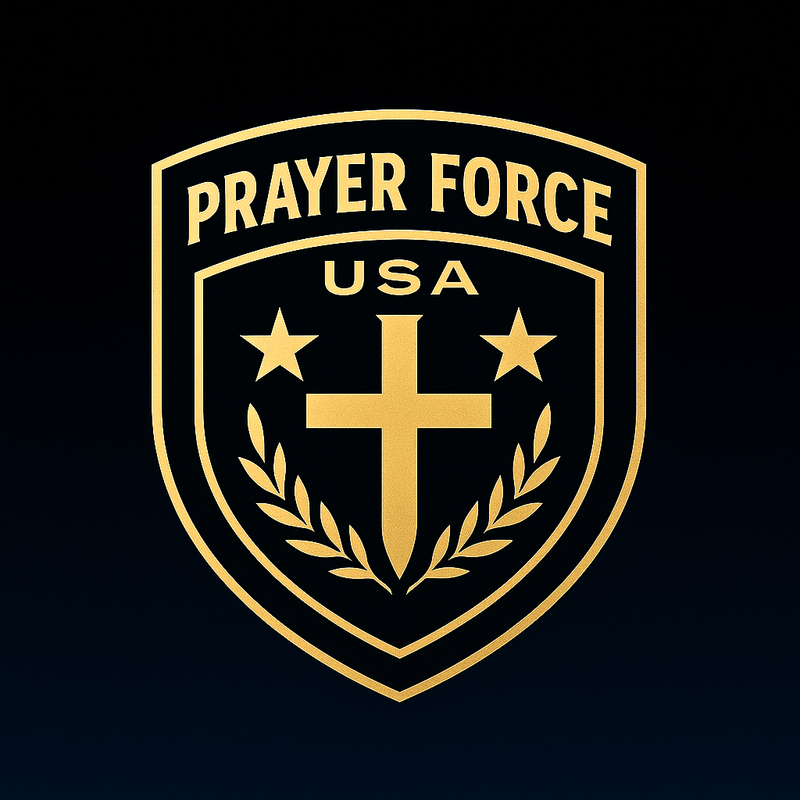

Civilian-led
Nation-focused
Structured

Prayer Force USA
Standing in the Gap for Our Nation
One Charge. Many Posts.
Standing in the Gap — On Every Front.
Prayer Force USA is a disciplined national prayer framework answering the America Prays call with two clear lanes: regular intercession (most days) and a weekly broadcast rhythm. (Independent—no affiliation with any government agency or military organization.)
Intercession focus:
Broadcast:
Two Lanes
Stay focused. Stay consistent.
We avoid drifting into a typical “anything goes” prayer meeting by separating regular intercession (most days)
from a structured weekly broadcast rhythm.
Standing in the Gap
Regular intercession (most days)Standing in the Gap is held most days with a consistent national focus. Drop in as often as you want, for as long as you want—no roll call, no clock-watching.
What you can expect
• National concerns first (leaders, justice, families, repentance, protection).
• Short, focused prayer that stays on task.
• Join freely; stay as long as you like.
• Short, focused prayer that stays on task.
• Join freely; stay as long as you like.
Why it’s not “attendance-based”
The goal is disciplined intercession for national needs—not building a roll-call culture.
Come when you can. Leave when you must.
America Prays Broadcast
Weekly rhythmA weekly national prayer hour—Prayer Force USA’s direct answer to the America Prays call.
Why it exists
It creates a dependable weekly “on-ramp” for national intercession—consistent, structured, and accessible.
Suggested broadcast segments
• Welcome + scripture anchor
• 2–3 thematic blocks (leaders, families, justice/mercy)
• Repentance + blessing + close
• 2–3 thematic blocks (leaders, families, justice/mercy)
• Repentance + blessing + close
Submit
Submit a National Prayer
This is for prayers aligned to national needs. Submissions are reviewed privately.
If you grant permission, your prayer may be read on-camera at the discretion of Prayer Force USA.
Support
Help sustain the work
This funds infrastructure (hosting, broadcasting, production) — not “charging for prayer.”
Keep it hidden until you’re ready.
Support / Donate